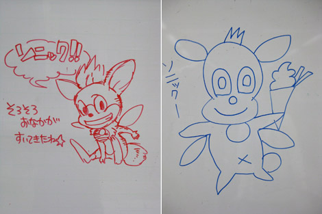
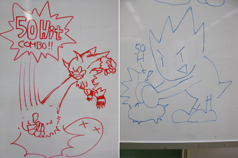

『キャラクターうろ覚えイラスト対決！ (後編)』
2009年01月19日
こんにちは、マツバラです！
今回は、前回に引き続き、
『SWA』キャラクターうろ覚えイラスト対決です！
こんにちは、ヨシノです……
どうしたの、ヨシノ！
元気なさそうだけど！
元気がないっていうより、
どんな奇怪な絵が出てくるか心配で……
大丈夫だよ、ヨシノ、自信持って！
いや、私のことじゃなく。
それじゃあ、第二回目のお題は「チップ」！
愛くるしくソニックに語りかけるチップでいきましょう！
はーい。
[ ヨシノ画 ] [ マツバラ画 ]

…………真面目に描け。
かっ、描いてるよ！！
手に持ってる、それは何？
チップのトレードマーク！
スペシャルチョコサンデーだよ！
なんで脇から何か出てるの？
それは、羽！！
これ、どう見てもチップじゃない。
そっか、チップにおヘソはなかったっけ？
そうじゃない！！
つっ、次のお題に行こう！
やっぱり締めはウェアホッグ！
お題は、「かっこよく50コンボを決めるウェアホッグ☆」で！
[ ヨシノ画 ] [ マツバラ画 ]

……マツバラ。
なあに？
何か、言い残すことはある？
…………
…………
……すいませんでした。
わかれば、よろしい。
こ、これが私の精一杯……
描いてる途中「真面目に描け」って
何度言ってもコレだしね……
ソニックきゅんへの愛はあるの！
だけど、絵は……絵だけは……！
ああ、泣いちゃった。
マツバラ、元気出して。
前回のマツバラの絵を見て励ましのメールをくれた方もいるんだよ。
えっ……本当？
PN velctさんより「Mバラさん…
あの絵はないでしょう…
いや 普通に…」
どこが励まし！？
ドン引きされてるじゃない！！
アッハッハッハ。
うわ～～～ん！！
それでは次回は企画第3弾！
くさもち一号さんのリクエストで、『SWA』ディレクター橋本さんのお席を
ガサ入……じゃない、拝見しに参ります☆
日時: 2009年01月19日 19:30 | パーマリンク


 ソニックを愛する、元気な『SWA』2年目プランナー。
ソニックを愛する、元気な『SWA』2年目プランナー。 マイペースな『SWA』2年目プランナー。
マイペースな『SWA』2年目プランナー。
 ご意見・ご要望はこちら
ご意見・ご要望はこちら RSS
RSS